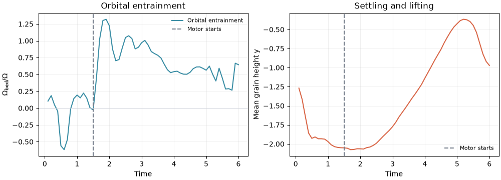
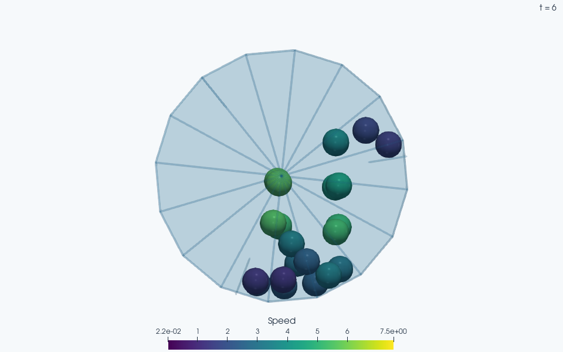

Note
Go to the end to download the full example code.
A rotating drum loaded from an STL mesh#
Load a triangulated drum mesh from STL, fill it with frictional grains, and
drive rigid drum rotation with a user_pre_step_actions callback.
Grain–grain contacts: Cundall–Strack friction and damping.
Grain–drum contacts: elastic normal springs on the mesh facets (the three radial lifters entrain the bed via their surface normals).
Requires Matplotlib and JaxDEM[io] (for VTK’s STL reader). Set
JAXDEM_DRUM_STL=/path/to/drum.stl to substitute another mesh centered at
the origin and rotating about z.
from dataclasses import replace
import os
from pathlib import Path
import jax.numpy as jnp
import matplotlib.pyplot as plt
import numpy as np
from vtkmodules.util.numpy_support import vtk_to_numpy
from vtkmodules.vtkIOGeometry import vtkSTLReader
import jaxdem as jdem
from jaxdem.utils.quaternion import Quaternion
1) Load the STL Boundary Mesh#
vtkSTLReader handles both ASCII and binary STL files.
add_mesh() turns each triangle into a contact facet;
rigid=True, filled=False, fixed=True groups the drum shell and internal
lifters into one rigid, prescribed-motion body.
def load_stl(path: Path) -> tuple[np.ndarray, np.ndarray]:
if not path.is_file():
raise FileNotFoundError(f"Drum STL does not exist: {path}")
reader = vtkSTLReader()
reader.SetFileName(str(path))
reader.Update()
mesh = reader.GetOutput()
vertices = vtk_to_numpy(mesh.GetPoints().GetData()).copy()
faces = vtk_to_numpy(mesh.GetPolys().GetConnectivityArray()).reshape(-1, 3).copy()
return vertices, faces
example_dir = Path(__file__).resolve().parent if "__file__" in globals() else Path.cwd()
mesh_path = Path(
os.environ.get("JAXDEM_DRUM_STL", example_dir / "data" / "rotating_drum.stl")
)
vertices, faces = load_stl(mesh_path)
2) Place Frictional Grains and Attach the Drum Mesh#
Arrange 24 spheres in two layers below the drum center, clear of the three
radial lifters, then attach the STL triangles as species_id=1:
drum_radius = 3.0
grain_radius = 0.32
n_grains = 24
gravity = 9.81
omega = 0.5
settle_time = 1.5
dt = 0.004
candidates = []
for row in range(4):
y = -1.80 + row * 0.58
for x in np.arange(-1.98, 1.99, 0.66) + (row % 2) * 0.33:
pt = np.array([x, y])
clear = all(
np.linalg.norm(
pt - np.array([np.cos(a), np.sin(a)]) * np.clip(pt @ [np.cos(a), np.sin(a)], 2.1, 3.0)
)
> grain_radius + 0.09
for a in np.arange(3) * (2.0 * np.pi / 3.0)
)
if np.hypot(x, y) < 2.45 and clear:
candidates.append((x, y))
base = np.asarray(candidates[: n_grains // 2])
grain_initial = np.concatenate(
[
np.column_stack([base + np.array([shift, 0.0]), np.full(len(base), z)])
for z, shift in [(-0.33, -0.04), (0.33, 0.04)]
]
)
state = jdem.State.create(
pos=jnp.asarray(grain_initial),
rad=jnp.full(n_grains, grain_radius),
mass=jnp.ones(n_grains),
inertia=jnp.full((n_grains, 3), 0.4 * grain_radius**2),
)
state = jdem.State.add_mesh(
state,
vertices,
faces,
thickness=0.025,
mass=30.0,
rigid=True,
filled=False,
fixed=True,
species_id=1,
)
initial_q = state.q
wall_com = state.pos_c[n_grains:].copy()
3) Prescribe Drum Rotation and Configure Mixed Contact Routing#
user_pre_step_actions runs before step_before_force (see the step
lifecycle in Integrators and Minimizers). Because a fixed body drifts by
dt * vel and rotates by dt * ang_vel during step_before_force,
prescribe_drum sets the start-of-step orientation and COM offset by
-dt * speed so the mesh lands at the exact angle
\(\theta(t) = \Omega \max(t - t_{\text{settle}}, 0)\) during force
evaluation.
Note the collider settings: NeighborList uses
cutoff = 2 * drum_radius with secondary_collider_type="naive" because
large drum triangles span much farther than individual sphere diameters.
def prescribe_drum(st: jdem.State, sys: jdem.System) -> tuple[jdem.State, jdem.System]:
speed = jnp.where(sys.time > settle_time, omega, 0.0)
end_angle = omega * jnp.maximum(sys.time - settle_time, 0.0)
start_rot = Quaternion.from_rotvec(jnp.array([0.0, 0.0, end_angle - sys.dt * speed]))
end_rot = Quaternion.from_rotvec(jnp.array([0.0, 0.0, end_angle]))
target_q = start_rot @ initial_q
target_com = Quaternion.rotate(end_rot, wall_com)
center_vel = jnp.cross(jnp.array([0.0, 0.0, speed]), target_com)
q = Quaternion(
st.q.w.at[n_grains:].set(target_q.w[n_grains:]),
st.q.xyz.at[n_grains:].set(target_q.xyz[n_grains:]),
)
return (
replace(
st,
q=q,
pos_c=st.pos_c.at[n_grains:].set(target_com - sys.dt * center_vel),
vel=st.vel.at[n_grains:].set(center_vel),
ang_vel=st.ang_vel.at[n_grains:].set(jnp.array([0.0, 0.0, speed])),
),
sys,
)
material = jdem.Material.create(
"elasticfrict",
young=4_000.0,
poisson=0.3,
density=1.0 / (4.0 * np.pi * grain_radius**3 / 3.0),
mu=0.6,
e=0.45,
mu_r=0.05,
)
router = jdem.ForceRouter.from_dict(
S=2,
mapping={
(0, 0): jdem.ForceModel.create("cundallstrack"),
(0, 1): jdem.ForceModel.create("sphere_facet_spring"),
},
)
system = jdem.System.create(
state=state,
dt=dt,
force_model=router,
collider_type="NeighborList",
collider_kw={
"cutoff": 2.0 * drum_radius,
"skin": 0.2,
"max_neighbors": 32,
"secondary_collider_type": "naive",
},
force_manager_kw={"gravity": jnp.array([0.0, -gravity, 0.0])},
mat_table=jdem.MaterialTable.from_materials([material]),
user_pre_step_actions=prescribe_drum,
)
state, system = jdem.System.initialize(state, system)
4) Run Settling + Rotation Rollout and Measure Entrainment#
Collect 60 evenly spaced snapshots. To inspect the 3D drum and grains in
ParaView, pass (scene_states, scene_systems) to
VTKWriter(directory="drum_vtk").save(scene_states, scene_systems, trajectory=True).
state, system, (scene_states, scene_systems) = jdem.System.trajectory_rollout(
state, system, n=60, stride=25
)
system.check_overflow()
times = np.asarray(scene_systems.time)
p = np.asarray(scene_states.pos[:, :n_grains])
v = np.asarray(scene_states.vel[:, :n_grains])
bed_omega = np.sum(p[..., 0] * v[..., 1] - p[..., 1] * v[..., 0], axis=-1) / np.sum(
p[..., :2] ** 2, axis=(-1, -2)
)
mean_entrainment = float(np.mean(bed_omega[times > settle_time + 1.0]) / omega)
print(f"Loaded {len(faces)} STL triangles from {mesh_path.name}")
print(f"Froude number: {omega**2 * drum_radius / gravity:.3f}")
print(f"Mean orbital entrainment after startup: {mean_entrainment:.3f}")
Loaded 70 STL triangles from rotating_drum.stl
Froude number: 0.076
Mean orbital entrainment after startup: 0.655
Plot Orbital Response and Bed Height#
fig, (ax_trace, ax_height) = plt.subplots(1, 2, figsize=(10, 3.6), layout="constrained")
ax_trace.plot(times, bed_omega / omega, color="#3b8ea5", label="Orbital entrainment")
ax_trace.axvline(settle_time, color="#737b89", ls="--", label="Motor starts")
ax_trace.axhline(0.0, color="#d0d4dc", lw=0.8)
ax_trace.set(xlabel="Time", ylabel=r"$\Omega_{\mathrm{bed}} / \Omega$", title="Orbital entrainment")
ax_trace.legend(frameon=False, fontsize=8)
ax_height.plot(times, p[:, :, 1].mean(axis=1), color="#d96748")
ax_height.axvline(settle_time, color="#737b89", ls="--", label="Motor starts")
ax_height.set(xlabel="Time", ylabel="Mean grain height y", title="Settling and lifting")
ax_height.legend(frameon=False, fontsize=8)
for ax in (ax_trace, ax_height):
ax.grid(alpha=0.18)
plt.show()


Grain colors show instantaneous speed on a fixed scale. The imported facet walls are transparent to expose the bed; their simulation geometry and contacts are unchanged.
Explore this scene in 3D
Total running time of the script: (2 minutes 9.420 seconds)